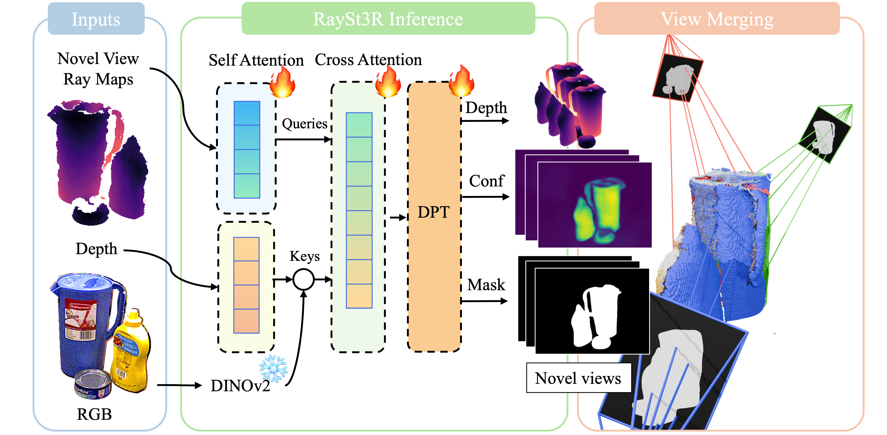

RaySt3R: Predicting Novel Depth Maps for Zero-Shot Object Completion


3D shape completion has broad applications in robotics, digital twin reconstruction, and extended reality (XR). Although recent advances in 3D object and scene completion have achieved impressive results, existing methods lack 3D consistency, are computationally expensive, and struggle to capture sharp object boundaries. Our work (RaySt3R) addresses these limitations by recasting 3D shape completion as a novel view synthesis problem. Specifically, given a single RGB-D image and a foreground object mask, and a novel viewpoint (encoded as a collection of query rays), we train a feedforward transformer to predict depth maps, object masks, and per-pixel confidence scores for those query rays. RaySt3R fuses these predictions across multiple query views using a confidence- and occlusion-aware merging algorithm to reconstruct complete 3D shapes. We evaluate RaySt3R on synthetic and real-world datasets, and observe it achieves state-of-the-art performance, outperforming the baselines on all datasets by up to 44% in 3D chamfer distance.
● Scroll to zoom in/out
● Drag to rotate
● Press "shift" and drag to pan
Select a method from the dropdown menu to compare RaySt3R to the baselines.
● Scroll to zoom in/out
● Drag to rotate
● Press "shift" and drag to pan
@misc{,
}